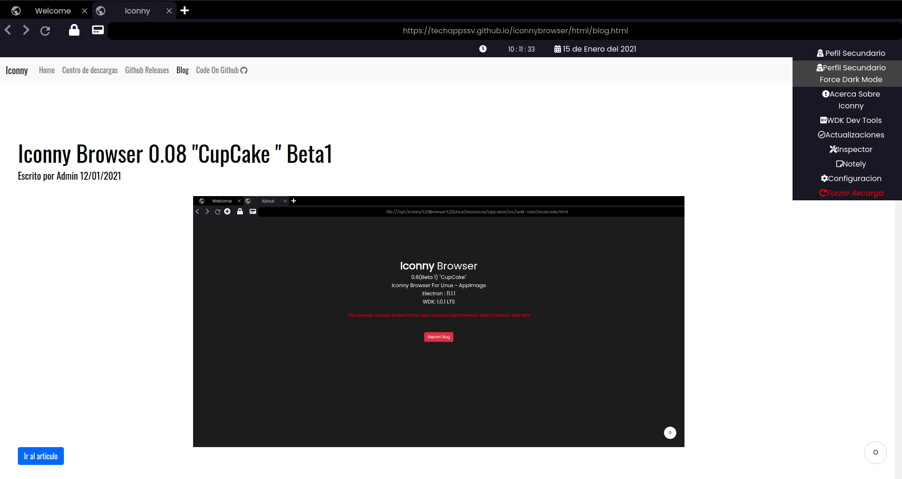
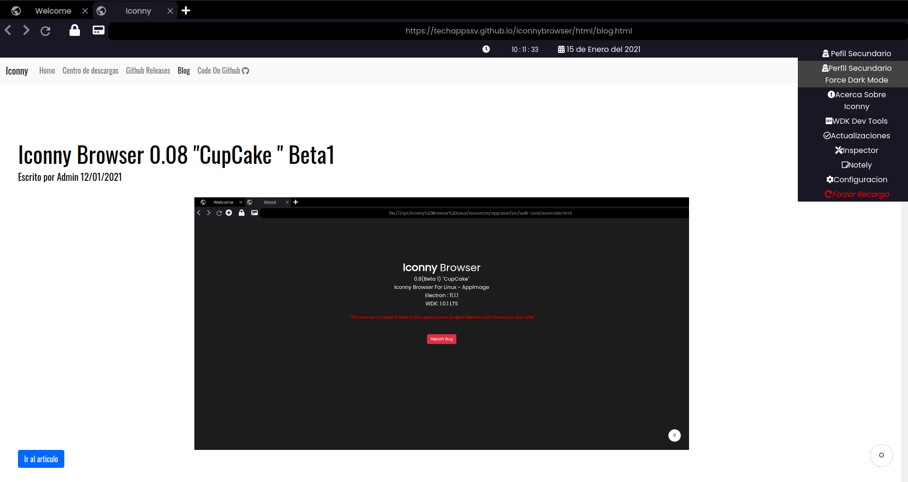

Iconny Browser Linux "CupCake" 0.08 Beta 2
Escrito por Admin 15/01/2021

Nos complace anunciar que hemos sacado la version 0.08 Beta 2 con nombre en codigo o mejor dicho nombre de desarrollo "CupCake" esta version la
Beta 2 que aplica las correcciones de la Beta 1 y nuevas caracteristicas propias de la Beta 2 ademas de siempre terminar de complementar A "Coffe Cake" y tambien tratando de cumplir el calendario
Novedades
Como primera novedad es que se ha cambiado ligeramente la paleta de colores en el darkmode siendo mas un poco de tonalidad entre negro y azul
Rediseño
Como segunda es que el boton para mas opciones desaparecio siendo reemplazado por un dropdown para abrir las demas opciones

Dropdown
Tercera novedad es que se incluye una hora y una fecha fija en el navegador

Fecha Y Hora Fija
Cuarta novedad es que se añadio el Inspector que sirve para inspeccionar paginas web con la DevTools de Chromium

Inspector
Quinta y ultima novedad ahora cuando se elige el modo claro ya Notely cuenta con una version sin interfaz oscura

Notely interfaz clara
Los repositorios de Iconny Updates y el repositorio principal seran actualizados en las proximas horas para descargar esta nueva Beta
Ademas para el lanzamiento oficial la 0.09 ya se esta trabajando para la distrubucion del navegador en formato snap
Otros cambios menores :
Como segunda es que el boton para mas opciones desaparecio siendo reemplazado por un dropdown para abrir las demas opciones

Dropdown
Tercera novedad es que se incluye una hora y una fecha fija en el navegador
Fecha Y Hora Fija
Cuarta novedad es que se añadio el Inspector que sirve para inspeccionar paginas web con la DevTools de Chromium
Inspector
Quinta y ultima novedad ahora cuando se elige el modo claro ya Notely cuenta con una version sin interfaz oscura
Notely interfaz clara
Los repositorios de Iconny Updates y el repositorio principal seran actualizados en las proximas horas para descargar esta nueva Beta
Ademas para el lanzamiento oficial la 0.09 ya se esta trabajando para la distrubucion del navegador en formato snap
Otros cambios menores :
Esperamos que les guste estos nuevas funciones y cambios
Atte Administrador Descargar La Version 0.08 Beta 2 AppImage
Descargar La Version 0.08 Beta 2 .deb
Ver Release En Github